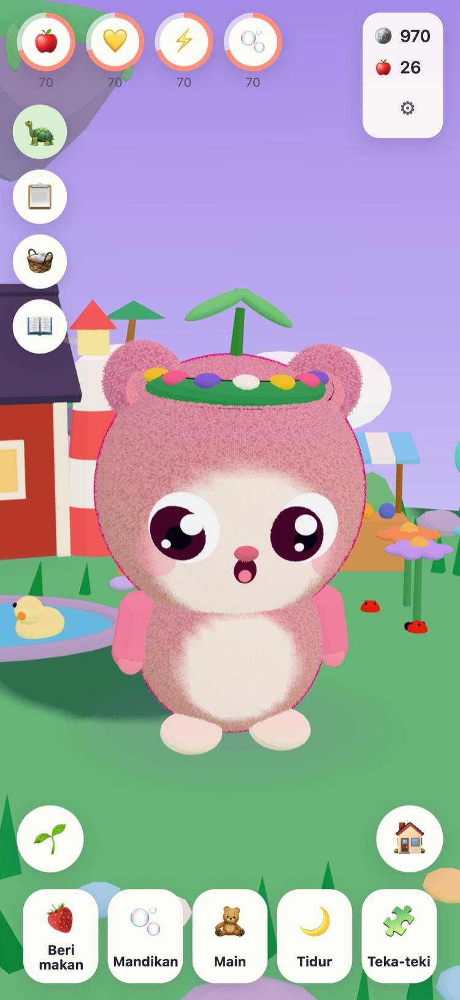
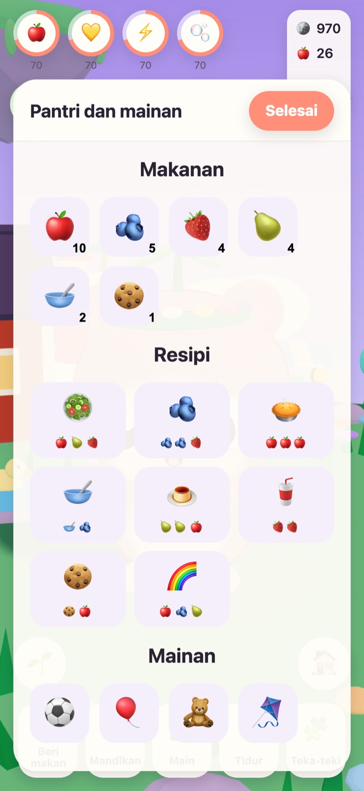
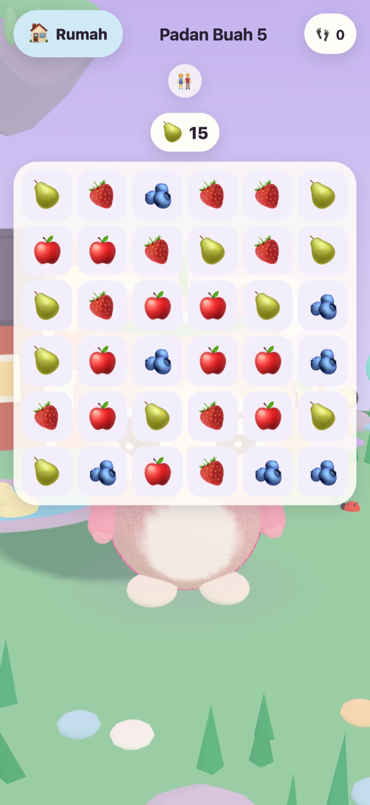
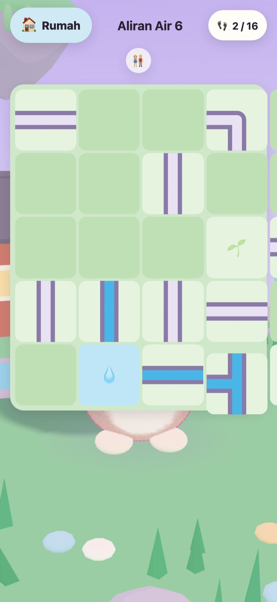
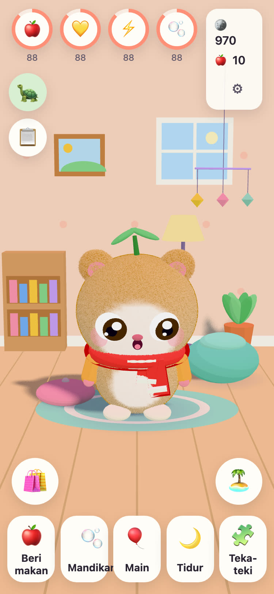
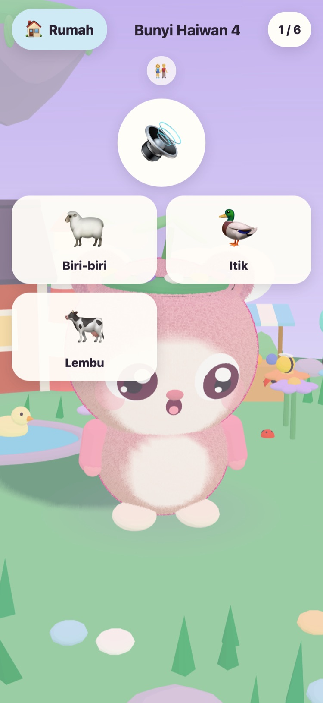

JUNOLittle Worlds
Tetaskan Juno, jagalah ia, dan selesaikan teka-teki lembut yang membangunkan sebuah pulau terapung. Permainan yang tenang untuk kanak-kanak berumur 6 hingga 10 tahun, di iPhone dan iPad.
Helo! Atuk jumpa tiga biji telur yang hangat. Yang mana satu milik kamu?
- Tiada iklan
- Tiada penjejakan
- Tiada akaun
- Tiada pemasa atau tekanan






Seorang kawan kecil milik mereka sendiri
Atuk Tintin, kura-kura tua yang menjaga Pulau Padang, telah menjumpai tiga biji telur yang hangat. Anak anda memilih satu dan menamakan apa yang menetas. Sejak itu, Juno itu milik mereka untuk diberi makan, dimandikan, diajak bermain dan ditidurkan.
-
Pilih telur
Tiga biji telur hangat, tiga warna. Anak anda memilih satu dan melihat ia menetas.
-
Namakan, sayangi
Beri makan, mandikan, bermain dan tidur. Juno menunjukkan perasaannya, dan membesar seiring persahabatan mereka.
-
Bangunkan pulau
Setiap bintang teka-teki membawa cahaya kembali ke Pulau Padang, sehingga bunga, lebah dan itik pulang semula.
Makan, mandi, main, tidur
Pelbagai makanan dan mainan, buih di dalam tab mandi, dan Juno yang menunjukkan perasaannya. Keperluan menurun perlahan-lahan dan tidak pernah sampai sifar, jadi Juno tidak akan hilang.
57 teka-teki lembut
Padan Buah, Taman Ingatan, serta Bunyi Haiwan dan Bunyi Kenderaan dengan rakaman sebenar. Bintang diperoleh daripada langkah, bukan masa, dan mencuba lagi sentiasa percuma.
Pulau yang kembali bangun
Taman Bunga mekar bersama lebah, Kolam Itik dipenuhi air dan itik, dan benih tumbuh menjadi epal dan strawberi di petak kebun.
Bilik untuk dijadikan selesa
Syiling daripada teka-teki dan misi harian boleh membeli hiasan untuk bilik Juno dan pakaian untuk dipakai. Tiada apa-apa di kedai syiling yang menggunakan wang sebenar.
Bacaan lantang
Atuk Tintin membacakan setiap baris dengan suaranya sendiri yang mesra, untuk kanak-kanak yang belum pandai membaca. Ketik dia untuk mendengarnya sekali lagi.
Ruang Ibu Bapa
Di sebalik kunci ibu bapa: bahasa, bacaan lantang, bunyi, waktu tidur dan peringatan rehat yang lembut. Pada waktu tidur, Juno tidur dan teka-teki menunggu sehingga pagi.
Bertutur dalam 21 bahasa
Atuk Tintin bercakap dengan anak anda dalam bahasa mereka sendiri. Pilih satu di Ruang Ibu Bapa, atau biarkan permainan mengikut peranti.
English Svenska Dansk Norsk Suomi Deutsch Nederlands Français Español Italiano Português (Brasil) Polski Русский Ελληνικά Türkçe Bahasa Melayu Kiswahili हिन्दी 日本語 한국어 简体中文
Dibuat oleh seorang datuk
JUNO dibuat di Sweden oleh seorang datuk untuk cucu perempuannya: permainan yang dia gembira melihat cucunya mainkan. Atuk Tintin, kura-kura dalam permainan ini, ialah dirinya sendiri.
Jadi peraturannya mudah. Tiada apa-apa yang menekan, tiada apa-apa yang memperdaya, dan tiada apa-apa yang mengumpul sebarang maklumat tentang anak anda.
Percuma, tanpa iklan
JUNO percuma untuk dimuat turun dan tiada iklan, tiada penjejakan dan tiada akaun. Semua yang dilakukan oleh anak anda kekal pada peranti anda. Lihat halaman privasi.
Orang dewasa boleh membeli JUNO Plus atau Pek Musim Sejuk di Ruang Ibu Bapa, di sebalik kunci ibu bapa. Kedua-duanya ialah pembelian sekali sahaja yang boleh anda pulihkan dan kongsi bersama keluarga.